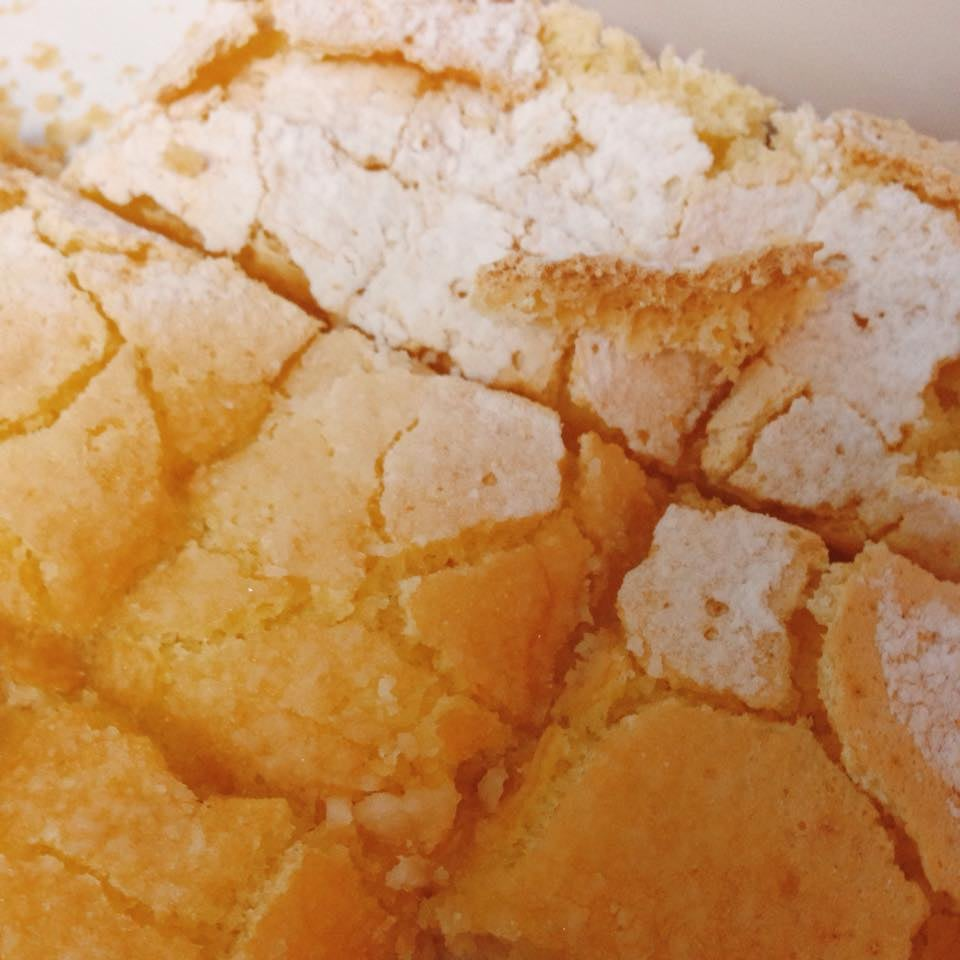
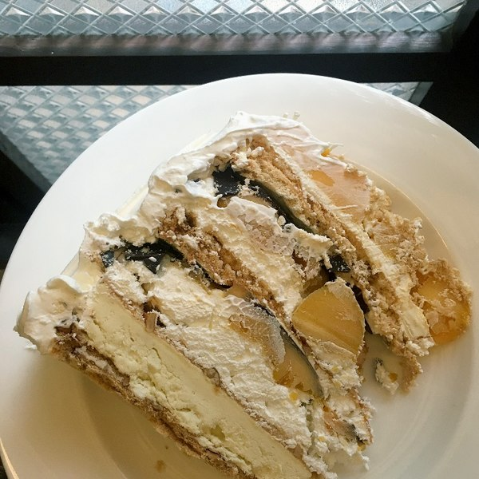
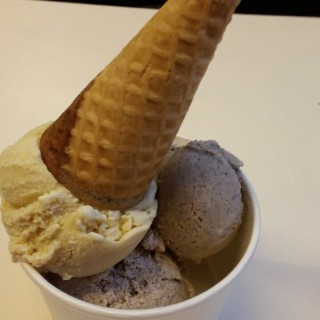
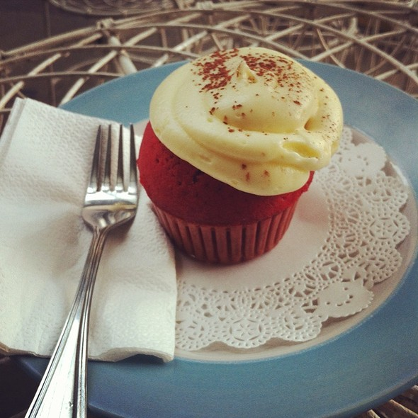
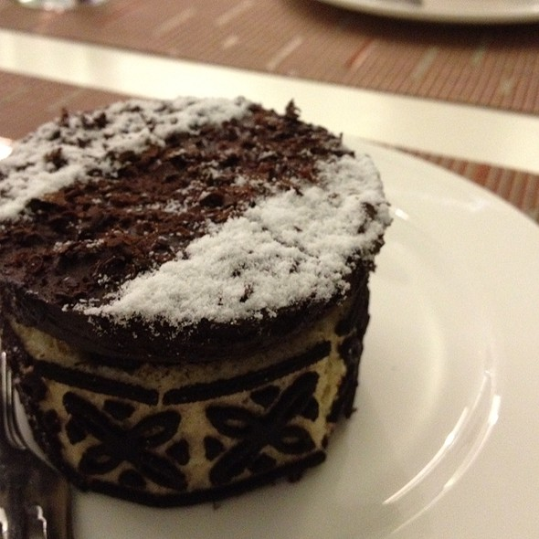
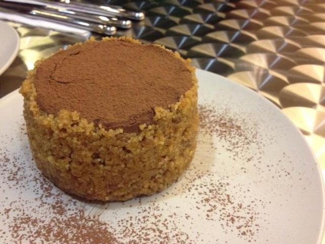
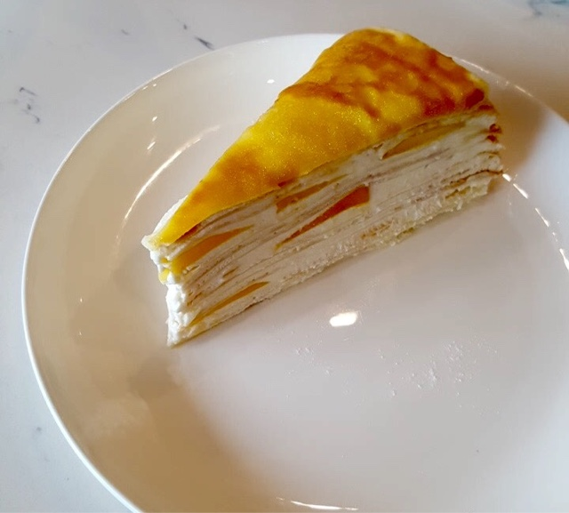

Mary Grace's Lemon Squares

I super love this because the soft lemon-flavored bread on the top of this pastry is combined with a moist and firm type crust, which simply balances the sour,creamy, and sweet taste of the flavors. Quite expensive but definitely worth it!
1 pc/Php24
8 pcs/Php170
16 pcs/Php310
Heny Sison's Mango Chocolate Torte

This layers of thick cashew meringue, thin layer of bittersweet chocolate mousse topped with mango balls and drizzled with white chocolate is a must try because of its explosive flavors that still complements each other
slice/Php220
Papa Diddi's Handcrafted Ice Creams

The flavors of this homemade, all-natural ice cream definitely made me raise my eyebrow at first sight because of its weird but creative flavors. Dulce Gato, Roasted Forbidden Rice, and Pumpkin ice creams are definitely the winning flavors that will make you come back for more
Cupcakes by Sonja's Red Velvet

This traditional Southern Red Velvet cupcake made with Belgian cocoa and topped with luscious cream cheese icing has been the best version of red velvet cupcake for me because of its soft, freshly-baked bread and its creamy cheese frosting has a smooth texture and has the right amount of sweetness in it
The Cake Club's Supermoist Chocolate Cake

This chocolate cake is definitely supermoist! It's chocolate over chocolate, this is so far the second best chocolate cake I've ever had! This cake will make you feel like in heaven and will make you want to eat more
individual/Php250
whole/Php1,150
Paul Boulangerie's Macaron Chocolat

This is indeed crunchy on the outside and very chewy inside with just the right amount of chocolate cream in the middle. You will surely taste the chocolatey goodness of this macaron! It is quite pricey but it will definitely go beyond your expectations!
1 pc/Php250
Classic Confections' Nono's Chocolate Oblivion

This is definitely the best chocolate cake I have ever eaten! It tastes more like a giant truffle than a cake. It’s rich, dark and not too sweet. It’s so creamy and it has sweet crunchy walnut praline bits on the outside. This will surely make you go crazy for more
mini/Php350
p>whole/Php1,395
Cake2Go's Dulce De Leche Cheesecake

This has to be the best cheesecake for me! The texture of the cheesecake is smooth and not dry. The dulce de leche above the cake complements very well and the crust of the cake is not hard. This cake sort of tastes like the cheesecake from Classic Confections. The cake may be affordable, but it will make you say wow!
slice/Php100
whole/Php690
Paper Moon's Mango Mille Crepe

I love the blend of the soft crepe and yummy cream with each bite of it. The delicate cream has the perfect balance of sweetness and thickness
slice/Php225
whole/Php2,000